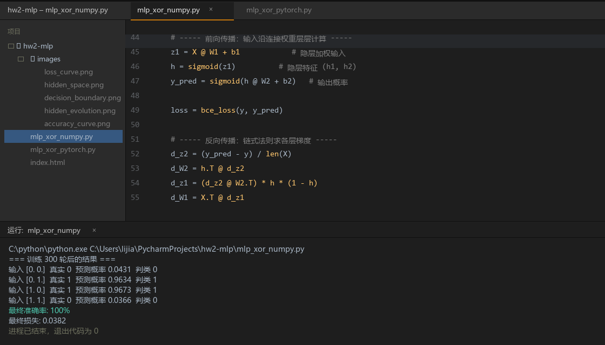
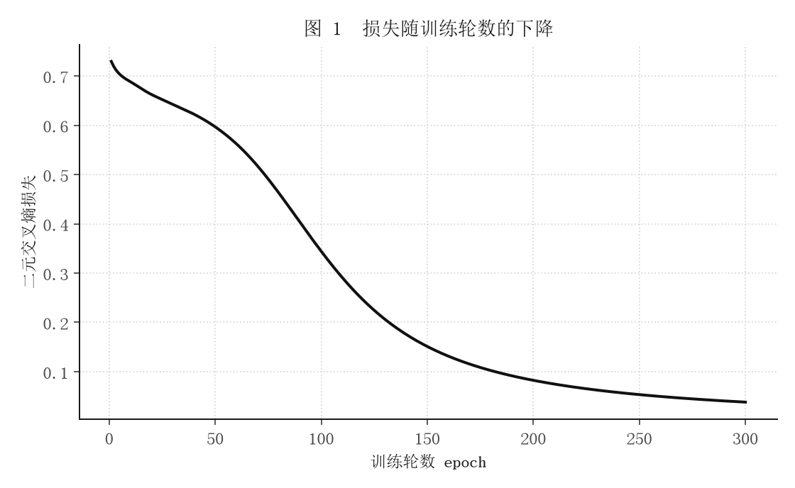
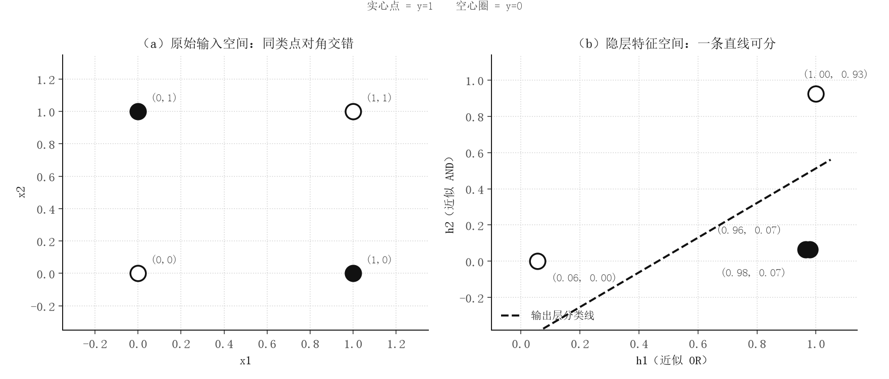
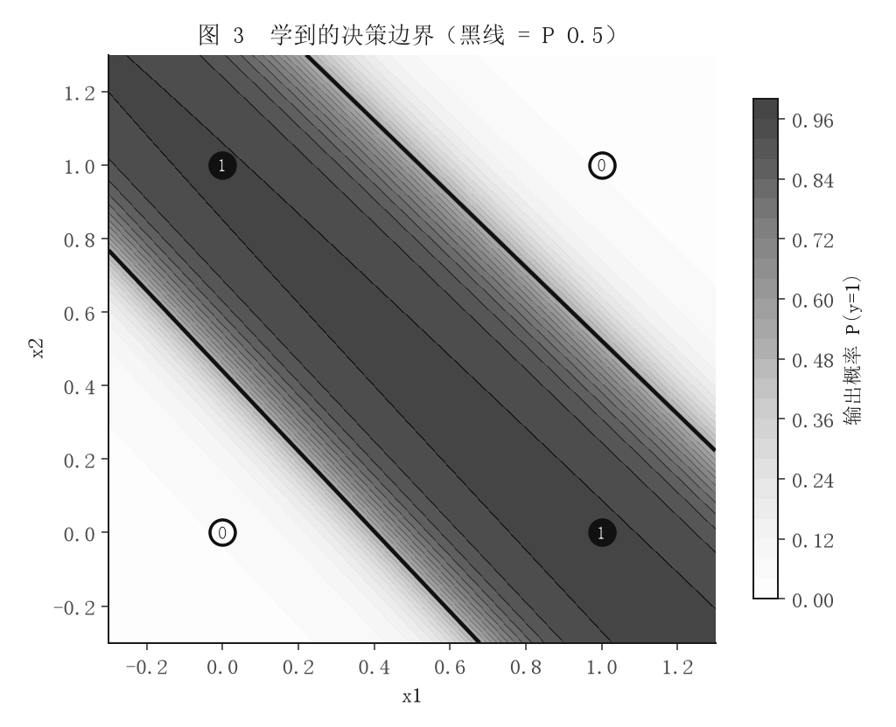
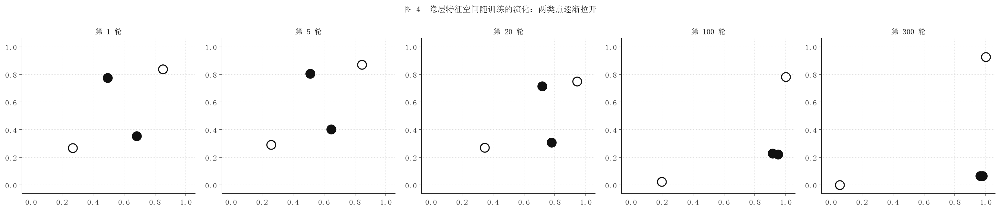

引课上老师讲了什么
先把课堂笔记里最关键的一段话放在最前面，整个作业就是围绕它展开的。
老师先在二维平面上画了一条直线，怎么挪、怎么转，都没法把 XOR 的四个点分成两类—— 这不是线没画好，而是这样一条线在数学上根本不存在。所以单层网络在这里"死路一条"， 必须引入多层结构：先让隐层把点"搬个位置"，换到一个新的空间里，再画线就分得开了。 —— 课堂笔记 · 第一篇第 15 节 MLP 部分
这句话其实就是整个作业的"题眼"：二维平面上解决不了的，不是靠把线画得更巧，而是靠换一个空间。 作业要求的 2-2-1 网络，前面那个"2"就是用来搬位置的隐层，后面那个"1"才是真正画线分类的输出层。
一老师的要求，拆成四条
对照 PPT 第 85、88 页整理，每条做完都能对上。
- 任务：用多层感知机解决 XOR 问题，并展示参数学习的过程。
- 结构：2 个输入 → 2 个 sigmoid 隐层单元 → 1 个输出；隐层偏置初始化为 −1。
- 训练配置：4 个样本全部训练；二元交叉熵损失 + Adam 优化器，学习率 0.03，训练 300 轮；输出概率 > 0.5 判为 1。
- 原理四步：前向计算 → 计算损失 → 反向传播求梯度 → Adam 依据梯度调整权重（梯度本身不更新）。
二为什么二维分不开，加了隐层就行
先说人话，再给严谨版；结构图放在中间当"地图"。
像操场上四个人站成正方形，对角的两个人是一队（00 和 11 一队，01 和 10 一队）。 不管警戒线怎么拉直，总有一队被劈成两半——所以一条线注定不够。
存在 w、b 使得 w·x+b>0 判为 1，这叫线性可分。XOR 的四个样本不满足该条件， 这证明了单层感知机无法解决异或问题（Minsky 与 Papert，1969）。
2-2-1 网络结构（与老师 PPT 一致）
隐层就是那个"搬位置"的步骤：h₁ 管的是"有没有一个是 1"（近似 OR）， h₂ 管的是"是不是两个都是 1"（近似 AND）。搬完之后，01 和 10 挤到一起去了， 00 和 11 待在对角——再拉一条线，轻松分开。
隐层实现了一次特征变换 φ：把输入 (x₁,x₂) 映射为 (h₁,h₂)。在 φ 诱导的新空间中， 两类样本变得线性可分。这就是"多层"的价值——隐藏层把输入组合成新特征，使不可线性分离变为可分。
本次训练学到的映射结果（4 个点在新空间里的"座位"）：
| 输入 x₁x₂ | h₁（≈OR） | h₂（≈AND） | y | 新位置 |
|---|---|---|---|---|
| 00 | 0.06 | 0.00 | 0 | 左下 |
| 01 | 0.96 | 0.07 | 1 | 右下 |
| 10 | 0.98 | 0.07 | 1 | 右下 |
| 11 | 1.00 | 0.93 | 0 | 右上 |
输出层在这个新空间里学到的判别线（虚线）见下方图 2(b)：y=0 的两个空心圈在线的同一侧，y=1 的实心点在另一侧。
三两种实现
NumPy 手写版用来"看清"每一步，PyTorch 版对照老师 PPT 的框架写法。
3.1 NumPy 手写版
前向传播、损失、反向传播、Adam 更新全部手写（完整代码见 mlp_xor_numpy.py）：
# ---- 前向传播：输入沿连接权重层层计算 ---- z1 = X @ W1 + b1 # 隐层加权输入 h = sigmoid(z1) # 隐层特征 (h1, h2) y_pred = sigmoid(h @ W2 + b2) # 输出概率 # ---- 计算损失：二元交叉熵，衡量预测与标签的差距 ---- loss = -mean(y*log(p) + (1-y)*log(1-p)) # ---- 反向传播：链式法则，求各层权重对损失的影响 ---- d_z2 = (y_pred - y) / N # BCE + sigmoid 的梯度恰好是 (预测 - 真实) d_W2 = h.T @ d_z2 # 输出层权重梯度 d_z1 = (d_z2 @ W2.T) * h * (1-h) # sigmoid 导数 h(1-h) d_W1 = X.T @ d_z1 # 隐层权重梯度 # ---- Adam 更新：依据梯度调整权重（梯度本身不更新） ---- m = β₁·m + (1-β₁)·grad; v = β₂·v + (1-β₂)·grad² param -= lr · m̂ / (√v̂ + ε)
3.2 PyTorch 版（对照老师 PPT 第 88 页）
W1 = torch.nn.Parameter(torch.randn(2, 2))
b1 = torch.nn.Parameter(torch.tensor([-1., -1.])) # 隐层偏置初始 -1
W2 = torch.nn.Parameter(torch.randn(2, 1))
b2 = torch.nn.Parameter(torch.tensor([0.]))
optimizer = torch.optim.Adam([W1, b1, W2, b2], lr=0.03)
loss_fn = torch.nn.BCELoss() # 二元交叉熵
for epoch in range(1, 301):
optimizer.zero_grad()
h = torch.sigmoid(X @ W1 + b1) # 前向计算
y_pred = torch.sigmoid(h @ W2 + b2)
loss = loss_fn(y_pred, y) # 损失
loss.backward() # 反向传播求梯度
optimizer.step() # Adam 更新权重
loss.backward() 自动求梯度——结果一致，互相验证。3.3 在 PyCharm 里跑（我的 Python 课就用它）
代码就是普通的 Python 脚本，PyCharm 完全可以跑，步骤如下：
- 新建项目：File → New Project，选一个文件夹，解释器选本机的 Python 3.13。
- 放入代码：把
mlp_xor_numpy.py（和mlp_xor_pytorch.py）拖进项目目录。 - 装依赖：打开 PyCharm 底部的 Terminal，输入
pip install numpy matplotlib（跑 PyTorch 版再加pip install torch）。也可以在 Settings → Project → Python Interpreter 里点 ➕ 搜索安装。 - 运行：右键代码编辑区 → Run 'mlp_xor_numpy'，控制台会打印每个样本的预测概率。
- 看图：运行结束，
images/文件夹里会自动生成 5 张黑白可视化图（想弹窗看图，把脚本里matplotlib.use("Agg")那行删掉即可）。 - 改着玩：试着改
np.random.seed(0)的数字，感受一下"换个起点掉进局部最优"是什么样子。

mlp_xor_numpy.py 的核心代码（前向传播 → 损失 → 反向传播 → Adam 更新），下半部分是控制台真实输出：4 个样本全部判对，最终准确率 100%、损失 0.0382，进程退出代码为 0。四训练结果
300 轮后，4 个样本全部判对。
| 输入 x₁x₂ | 真实 y | 预测概率 | 判类（>0.5 为 1） |
|---|---|---|---|
| 00 | 0 | 0.0431 | 0 ✓ |
| 01 | 1 | 0.9634 | 1 ✓ |
| 10 | 1 | 0.9673 | 1 ✓ |
| 11 | 0 | 0.0366 | 0 ✓ |
五可视化
全部图片由 mlp_xor_numpy.py 自动生成，黑白印刷风：实心点 = y1，空心圈 = y0。





六一个新生的理解 × 教材的说法
把这门课里我最想弄懂的几个概念，用自己的话和教材的话各说一遍。
梯度像下山时脚底的坡度：坡往哪边陡，就往反方向迈一步。300 轮训练，就是沿着坡走了 300 小步，最后停在谷底（损失最小处）。
梯度是损失对各参数的偏导向量，指向损失上升最快的方向；梯度下降沿其反方向以学习率为步长更新参数。反向传播用链式法则高效求得各层梯度。
一轮只把 4 个样本看一遍，权重只挪一点点。像捏橡皮泥，捏一下变一点，捏 300 下才成型——但捏过头也会糊，所以轮数要合适。
每轮（epoch）完整遍历一次训练集并按梯度更新参数。迭代次数不足则欠拟合；本例 300 轮时损失已收敛到 0.038，继续训练收益很小。
输出层吐出来的其实是一个"把握有多大"的百分数，0.5 就相当于"五五开"的分界线：过了就投"是"，没过就投"否"。
sigmoid 输出可解释为 P(y=1|x)。以 0.5 为阈值做二分类决策，等价于取后验概率更大的类别。
七踩坑记录
第一次实验里，(0,0)、(0,1)、(1,0) 全被判成 1，只有 (1,1) 判对——准确率 75%，损失卡在 0.50 不再下降。 这是 2-2-1 小网络的经典现象：某些初始值会让梯度走进"死角"出不来。
解决办法：换一个随机初始值再训练（固定随机种子保证可复现）。同一套超参数直接收敛到 100%。 由此体会到老师 PPT 里"参数更新依赖梯度"的另一面——初始值决定从哪里出发，误差曲面不是一碗平水。